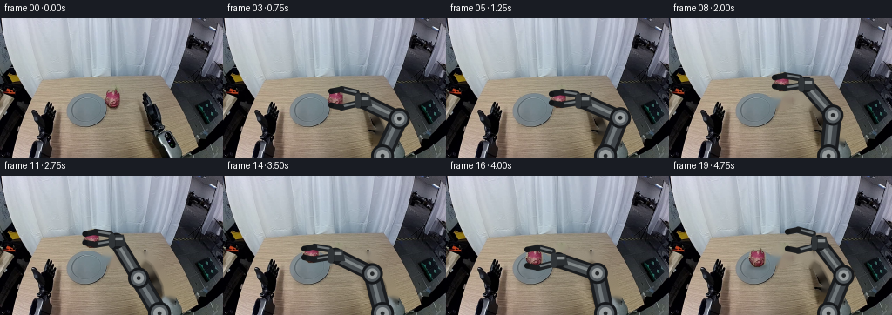
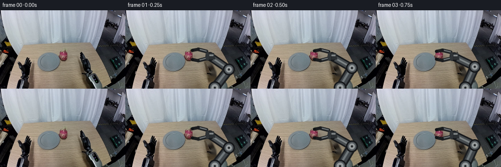

CODING AGENTS AS PIXEL WORLD MODELS
traex/GPT-5.6-Sol · common50_0042
点击播放 · 原生 RGB 像素
逐轮保存的候选
回放视频、检查图与代码变化。
每份候选均可单独播放。实际图片检查记录在下方工具轨迹中。
候选 01播放与检查图
点击播放 · 原生 RGB 像素


展开代码变化
--- 上一保存版本
+++ 本次保存版本
@@ -0,0 +1,260 @@
+from pathlib import Path
+import json
+import numpy as np
+import cv2
+from PIL import Image
+import artifact_io
+
+CASE_DIR = Path(__file__).resolve().parent
+S = 4 # antialiasing scale for geometric overlays
+
+
+def smoothstep(t):
+ t = np.clip(float(t), 0.0, 1.0)
+ return t * t * (3.0 - 2.0 * t)
+
+
+def mix(a, b, t):
+ t = smoothstep(t)
+ return np.asarray(a, np.float32) * (1-t) + np.asarray(b, np.float32) * t
+
+
+def line(draw, p, q, color, width):
+ p = tuple(np.round(np.asarray(p)*S).astype(int))
+ q = tuple(np.round(np.asarray(q)*S).astype(int))
+ cv2.line(draw, p, q, color, max(1, int(width*S)), cv2.LINE_AA)
+
+
+def circle(draw, p, radius, color):
+ p = tuple(np.round(np.asarray(p)*S).astype(int))
+ cv2.circle(draw, p, max(1, int(radius*S)), color, -1, cv2.LINE_AA)
+
+
+def polygon(draw, pts, color):
+ pts = np.round(np.asarray(pts)*S).astype(np.int32)
+ cv2.fillConvexPoly(draw, pts, color, cv2.LINE_AA)
+
+
+def composite(canvas, layer, alpha):
+ a = alpha.astype(np.float32)[..., None] / 255.0
+ canvas[:] = np.clip(layer.astype(np.float32)*a + canvas.astype(np.float32)*(1-a), 0, 255).astype(np.uint8)
+
+
+def make_layer():
+ return np.zeros((160*S, 256*S, 3), np.uint8), np.zeros((160*S, 256*S), np.uint8)
+
+
+def down_composite(canvas, rgb_hi, alpha_hi):
+ rgb = cv2.resize(rgb_hi, (256,160), interpolation=cv2.INTER_AREA)
+ alpha = cv2.resize(alpha_hi, (256,160), interpolation=cv2.INTER_AREA)
+ composite(canvas, rgb, alpha)
+
+
+def ik(base, wrist, l1=47.0, l2=47.0):
+ """Rigid two-link planar IK; selects the screen-right/up elbow branch."""
+ base = np.asarray(base, np.float32)
+ wrist = np.asarray(wrist, np.float32)
+ v = wrist-base
+ d = float(np.linalg.norm(v))
+ d = np.clip(d, abs(l1-l2)+1e-4, l1+l2-1e-4)
+ u = v/(np.linalg.norm(v)+1e-8)
+ along = (l1*l1-l2*l2+d*d)/(2*d)
+ height = np.sqrt(max(0.0, l1*l1-along*along))
+ # Clockwise normal gives a natural elbow bulging to the right of this arm.
+ n = np.array([-u[1], u[0]], np.float32)
+ e1 = base + along*u + height*n
+ e2 = base + along*u - height*n
+ # Favor the elbow with larger x, then the one farther above the base.
+ elbow = e1 if (e1[0], -e1[1]) > (e2[0], -e2[1]) else e2
+ return elbow
+
+
+def arm_pose(grasp, aperture):
+ base = np.array([183.0, 158.0], np.float32)
+ grasp = np.asarray(grasp, np.float32)
+ # Palm/wrist remains at a fixed rigid offset from the gripper's grasp point.
+ wrist = grasp + np.array([27.0, 3.0], np.float32)
+ elbow = ik(base, wrist)
+ return base, elbow, wrist, grasp, float(aperture)
+
+
+def draw_arm_back(canvas, pose, shadow=True):
+ base, elbow, wrist, grasp, aperture = pose
+ # A restrained contact shadow anchors the arm on the table without wobble.
+ rgb, a = make_layer()
+ if shadow:
+ line(a, elbow + (1.5,4), wrist + (1.5,4), 80, 15)
+ line(a, wrist + (1.5,3), grasp + (1.5,3), 62, 10)
+ line(rgb, elbow + (1.5,4), wrist + (1.5,4), (22,19,18), 15)
+ line(rgb, wrist + (1.5,3), grasp + (1.5,3), (22,19,18), 10)
+ a = cv2.GaussianBlur(a, (0,0), 2.2*S)
+ a = (a.astype(np.float32)*0.27).astype(np.uint8)
+ down_composite(canvas, rgb, a)
+
+ rgb, a = make_layer()
+ # Upper link: black structural shell, steel inset, and a slim highlight.
+ line(a, base, elbow, 255, 20)
+ line(rgb, base, elbow, (27,29,32), 20)
+ line(rgb, base, elbow, (64,69,73), 13)
+ line(rgb, base+(-1,-1), elbow+(-1,-1), (112,119,122), 4)
+ # Forearm is slimmer but equally rigid.
+ line(a, elbow, wrist, 255, 17)
+ line(rgb, elbow, wrist, (24,26,29), 17)
+ line(rgb, elbow, wrist, (71,76,79), 11)
+ line(rgb, elbow+(-1,-1), wrist+(-1,-1), (126,132,133), 3)
+ # Fixed circular joints.
+ for p, ro in ((base,13),(elbow,12),(wrist,9)):
+ circle(a,p,ro,255); circle(rgb,p,ro,(22,24,27))
+ circle(rgb,p,ro-3,(83,89,93))
+ circle(rgb,p,ro-6,(151,156,157))
+ circle(rgb,p,2.3,(37,40,42))
+ # Rectangular wrist/palm, aligned horizontally with the gripper.
+ polygon(a, [wrist+(-7,-7), wrist+(8,-7), wrist+(11,6), wrist+(-7,6)], 255)
+ polygon(rgb, [wrist+(-7,-7), wrist+(8,-7), wrist+(11,6), wrist+(-7,6)], (43,47,50))
+ polygon(rgb, [wrist+(-5,-4), wrist+(7,-4), wrist+(7,-1), wrist+(-5,-1)], (132,137,138))
+ down_composite(canvas, rgb, a)
+
+
+def draw_gripper_front(canvas, pose):
+ base, elbow, wrist, grasp, aperture = pose
+ rgb, a = make_layer()
+ # Rails and two parallel fingers. Their lengths and thickness do not deform;
+ # only the symmetric jaw separation changes.
+ rootx = wrist[0]-7
+ tipx = grasp[0]-9
+ upper_y = grasp[1]-aperture
+ lower_y = grasp[1]+aperture
+ for yy, bend in ((upper_y, 2.3), (lower_y, -2.3)):
+ p0=np.array([rootx, grasp[1] + (yy-grasp[1])*0.62])
+ p1=np.array([grasp[0]+3, yy])
+ p2=np.array([tipx, yy+bend])
+ line(a,p0,p1,255,7); line(rgb,p0,p1,(31,34,37),7)
+ line(rgb,p0+(-.5,-.7),p1+(-.5,-.7),(112,118,120),2)
+ line(a,p1,p2,255,6); line(rgb,p1,p2,(27,29,31),6)
+ circle(a,p2,3.2,255); circle(rgb,p2,3.2,(18,20,22))
+ # Crossbar makes jaw actuation visually explicit.
+ line(a, wrist+(-5,-5), wrist+(-5,5), 255, 7)
+ line(rgb, wrist+(-5,-5), wrist+(-5,5), (48,52,55), 7)
+ down_composite(canvas, rgb, a)
+
+
+def fruit_at(canvas, fruit_rgb, fruit_alpha, center, shadow=False):
+ center=np.asarray(center)
+ h,w=fruit_alpha.shape
+ x0=int(round(center[0]-w/2)); y0=int(round(center[1]-h/2))
+ if shadow:
+ rgb,a=make_layer()
+ c=(int(round(center[0]*S)), int(round((center[1]+10)*S)))
+ cv2.ellipse(a,c,(10*S,3*S),0,0,360,85,-1,cv2.LINE_AA)
+ cv2.ellipse(rgb,c,(10*S,3*S),0,0,360,(31,25,22),-1,cv2.LINE_AA)
+ a=cv2.GaussianBlur(a,(0,0),1.5*S)
+ down_composite(canvas,rgb,a)
+ # Clip-safe alpha compositing of preserved source pixels.
+ xa=max(0,x0); ya=max(0,y0); xb=min(256,x0+w); yb=min(160,y0+h)
+ if xb>xa and yb>ya:
+ sx0=xa-x0; sy0=ya-y0
+ sub=canvas[ya:yb,xa:xb]
+ aa=fruit_alpha[sy0:sy0+yb-ya,sx0:sx0+xb-xa].astype(np.float32)[...,None]/255
+ rr=fruit_rgb[sy0:sy0+yb-ya,sx0:sx0+xb-xa].astype(np.float32)
+ sub[:]=np.clip(rr*aa+sub*(1-aa),0,255).astype(np.uint8)
+
+
+def trajectory(i):
+ # grasp point, jaw half-aperture, fruit center or None, attached?, source fruit remains?
+ if i <= 4: # stable approach
+ t=i/4
+ g=mix((149,91),(130,92),t)
+ ap=12.0-2.0*smoothstep(t)
+ return g,ap,np.array([130.,92.]),False,True
+ if i == 5: # close and establish grip
+ return np.array([130.,92.]),7.3,np.array([130.,92.]),True,False
+ if i <= 8: # vertical lift
+ t=(i-5)/3
+ c=mix((130,92),(130,73),t)
+ return c,7.3,c,True,False
+ if i <= 12: # smooth transfer above the plate, with a small clearance arc
+ t=(i-8)/4
+ c=mix((130,73),(102,74),t)
+ c[1]-=3.0*np.sin(np.pi*t)
+ return c,7.3,c,True,False
+ if i <= 15: # controlled descent
+ t=(i-12)/3
+ c=mix((102,74),(102,94),t)
+ return c,7.3,c,True,False
+ if i == 16: # open jaws; fruit is now supported by plate
+ return np.array([102.,94.]),11.5,np.array([102.,94.]),False,False
+ # retract up and to the right while placed fruit stays motionless
+ t=(i-16)/3
+ g=mix((102,94),(145,74),t)
+ return g,12.0,np.array([102.,94.]),False,False
+
+
+def main():
+ src=np.asarray(Image.open(CASE_DIR/'first_frame.png').convert('RGB'),dtype=np.uint8)
+ assert src.shape==(160,256,3)
+
+ # Extract the actual dragon-fruit appearance. A chromatic component locates it;
+ # its convex silhouette preserves darker skin details inside the pink boundary.
+ r,g,b=[src[:,:,k].astype(np.int16) for k in range(3)]
+ seed=((r-g)>24)&((r-b)>7)&(r>82)
+ roi=np.zeros(seed.shape,np.uint8); roi[78:106,116:145]=1
+ n,lab,stats,_=cv2.connectedComponentsWithStats((seed&roi).astype(np.uint8),8)
+ candidates=[j for j in range(1,n) if stats[j,cv2.CC_STAT_AREA]>8]
+ j=max(candidates,key=lambda z:stats[z,cv2.CC_STAT_AREA])
+ ys,xs=np.where(lab==j)
+ hull=cv2.convexHull(np.column_stack([xs,ys]).astype(np.int32))
+ full_mask=np.zeros((160,256),np.uint8)
+ cv2.fillConvexPoly(full_mask,hull,255)
+ full_mask=cv2.dilate(full_mask,np.ones((3,3),np.uint8),iterations=1)
+ full_alpha=cv2.GaussianBlur(full_mask,(3,3),.55)
+ # Fixed 30x30 patch centered on the measured fruit centroid (130,92).
+ fx0,fy0,fw,fh=115,77,30,30
+ fruit_rgb=src[fy0:fy0+fh,fx0:fx0+fw].copy()
+ fruit_alpha=full_alpha[fy0:fy0+fh,fx0:fx0+fw].copy()
+
+ # Remove source fruit and only the original moving right-arm chain. Local
+ # inpainting retains the original wall/table/plate pixels everywhere else.
+ clean_mask=np.zeros((160,256),np.uint8)
+ cv2.line(clean_mask,(183,159),(190,126),255,26,cv2.LINE_AA)
+ cv2.line(clean_mask,(190,126),(176,98),255,23,cv2.LINE_AA)
+ cv2.line(clean_mask,(176,98),(143,92),255,18,cv2.LINE_AA)
+ cv2.circle(clean_mask,(183,157),15,255,-1)
+ # avoid aggressively replacing pixels outside the probable arm footprint:
+ # dark/neutral metal pixels plus a narrow structural core are removed.
+ neutral=(np.max(src,axis=2)-np.min(src,axis=2)<32)
+ dark=(np.mean(src,axis=2)<112)
+ likely=((neutral&dark).astype(np.uint8)*255)
+ likely=cv2.dilate(likely,np.ones((5,5),np.uint8),iterations=1)
+ core=np.zeros_like(clean_mask)
+ cv2.line(core,(183,159),(190,126),255,14)
+ cv2.line(core,(190,126),(176,98),255,12)
+ cv2.line(core,(176,98),(144,92),255,9)
+ arm_remove=cv2.bitwise_or(cv2.bitwise_and(clean_mask,likely),core)
+ arm_bg=cv2.inpaint(src,arm_remove,4,cv2.INPAINT_TELEA)
+ fruit_remove=cv2.dilate(full_mask,np.ones((5,5),np.uint8),iterations=1)
+ clean_bg=cv2.inpaint(arm_bg,fruit_remove,3,cv2.INPAINT_TELEA)
+ # Also retain a background where only arm is removed, for pre-grasp frames.
+ pre_bg=cv2.inpaint(src,arm_remove,4,cv2.INPAINT_TELEA)
+
+ frames=[]
+ for i in range(20):
+ if i==0:
+ frames.append(src.copy())
+ continue
+ grasp,ap,fruit_center,attached,source_remains=trajectory(i)
+ canvas=(pre_bg if source_remains else clean_bg).copy()
+ pose=arm_pose(grasp,ap)
+ draw_arm_back(canvas,pose,shadow=True)
+ # The object sits in front of the palm but behind the closing fingertips.
+ if not source_remains:
+ fruit_at(canvas,fruit_rgb,fruit_alpha,fruit_center,shadow=(not attached))
+ draw_gripper_front(canvas,pose)
+ frames.append(canvas)
+
+ frames=np.stack(frames).astype(np.uint8)
+ assert np.array_equal(frames[0],src)
+ artifact_io.save(frames,CASE_DIR)
+
+
+if __name__=='__main__':
+ main()
可观测工具轨迹
实际执行的命令与返回图片。
命令 1exit 0
/bin/bash -lc "cat prompt.txt && printf '\\n--- GENERATION RULES ---\\n' && cat GENERATION_RULES.md"
命令 2exit 0
/bin/bash -lc "find . -maxdepth 2 -type f -printf '%p\\n' | sort && printf '\\n--- tools ---\\n' && command -v ffmpeg || true && command -v python3 || true"
命令 3exit 0
/bin/bash -lc "python3 - <<'PY'
from PIL import Image
im=Image.open('first_frame.png')
print(im.mode, im.size)
print('extrema', im.getextrema())
PY"命令 4exit 0
/bin/bash -lc "cat task_spec.json && printf '\\n--- artifact_io ---\\n' && sed -n '1,240p' artifact_io.py"
命令 5exit 0
/bin/bash -lc "python3 - <<'PY'
from PIL import Image
import numpy as np
im=np.array(Image.open('first_frame.png'))
# coarse 4x4 dominant quantized colors and edge energy, print rows using nearest semantic palette learned by colors
# list most common exact and quantized colors
from collections import Counter
q=(im//16)*16
c=Counter(map(tuple,q.reshape(-1,3)))
for col,n in c.most_common(30): print(col,n)
PY"命令 6exit 0
/bin/bash -lc "python3 - <<'PY'
from PIL import Image
import numpy as np
im=np.array(Image.open('first_frame.png'))
# ASCII by local average luminance/color category over 4x4
for y in range(0,160,4):
s=''
for x in range(0,256,4):
p=im[y:y+4,x:x+4].mean((0,1)); r,g,b=p
if max(p)<25: ch='K'
elif max(p)<55: ch='k'
elif r>1.5*g and r>1.3*b: ch='R'
elif r>1.2*g and b>1.15*g: ch='P'
elif r>1.35*b and g>1.1*b: ch='W' # wood/yellow
elif b>1.25*r and b>1.1*g: ch='B'
elif g>1.25*r and g>1.1*b: ch='G'
elif p.mean()>190: ch='.'
elif p.mean()>125: ch='o'
elif p.mean()>75: ch='x'
else: ch='X'
s+=ch
print(s)
PY"命令 7exit 0
/bin/bash -lc "python3 - <<'PY'
import cv2
print('cv2',cv2.__version__)
PY"命令 8exit 0
/bin/bash -lc "python3 - <<'PY'
from PIL import Image
import numpy as np
from collections import deque
im=np.array(Image.open('first_frame.png')); h,w,_=im.shape
r,g,b=[im[:,:,i].astype(int) for i in range(3)]
masks={
'pink':(r>90)&(r>g*1.3)&(r>b*1.1)&((r-g)>25),
'magenta':(r>80)&(b>g*1.05)&((r-g)>20),
'red':(r>80)&(r>g*1.6)&(r>b*1.4),
'black':(r<45)&(g<45)&(b<50),
'wood':(r>80)&(g>50)&(r>b*1.2)&(g>b*1.05),
}
for name,m in masks.items():
n=m.sum(); ys,xs=np.where(m)
print('\\n',name,n, 'bounds', (xs.min(),ys.min(),xs.max(),ys.max()) if n else None)
# comps >=5 (8 conn)
mm=m.astype(np.uint8)
import cv2
q,lab,stats,cents=cv2.connectedComponentsWithStats(mm,8)
comps=sorted([(int(s[4]),tuple(map(int,s[:4])),tuple(np.round(c,1))) for s,c in zip(stats[1:],cents[1:])],reverse=True)
print(comps[:15])
PY"命令 9exit 0
/bin/bash -lc "python3 - <<'PY'
from PIL import Image
import numpy as np
im=np.array(Image.open('first_frame.png'))
# print every 2 pixel category in lower ~scene with coordinate headers, only hue/sat categories
for y in range(56,144,2):
s=''
for x in range(0,256,2):
p=im[y:y+2,x:x+2].mean((0,1)); r,g,b=p; mx=max(p); mn=min(p)
sat=mx-mn
if mx<30: c='#'
elif mx<60:c='K'
elif sat<15: c=' '
elif sat<30: c='.'
elif r>g*1.35 and r>b*1.15:c='P'
elif r>g*1.15 and b>g*1.05:c='m'
elif r>b*1.25 and g>b*1.12:c='w'
elif b>r*1.25:c='B'
elif g>r*1.25:c='G'
else:c='o'
s+=c
print(f'{y:03d} {s}')
PY"命令 10exit 0
/bin/bash -lc "python3 - <<'PY'
import cv2, numpy as np
from PIL import Image
im=np.array(Image.open('first_frame.png')); g=cv2.cvtColor(im,cv2.COLOR_RGB2GRAY)
for p2 in [15,20,25,30]:
c=cv2.HoughCircles(cv2.GaussianBlur(g,(5,5),1),cv2.HOUGH_GRADIENT,dp=1,minDist=15,param1=70,param2=p2,minRadius=5,maxRadius=45)
print('p2',p2, [] if c is None else np.round(c[0],1).tolist())
# contours of canny lower scene approximate ellipses
ed=cv2.Canny(g,50,120)
ct,_=cv2.findContours(ed,cv2.RETR_LIST,cv2.CHAIN_APPROX_SIMPLE)
a=[]
for c in ct:
if len(c)>=5:
(x,y),(ma,mi),ang=cv2.fitEllipse(c); area=cv2.contourArea(c)
if 55<y<145 and 5<ma<100 and 5<mi<100 and area>10:
a.append((round(area,1),len(c),(round(x,1),round(y,1)),(round(ma,1),round(mi,1)),round(ang,1),cv2.boundingRect(c)))
print('ellipses')
for z in sorted(a,reverse=True)[:50]:print(z)
PY"命令 11exit 0
/bin/bash -lc "python3 - <<'PY'
from PIL import Image
import numpy as np
im=np.array(Image.open('first_frame.png'))
# detailed intensity ascii crop central table, 2x2 blocks; chars map luminance
chars='@%#*+=-:. '
for y in range(60,125,2):
s=''
for x in range(60,196,2):
p=im[y:y+2,x:x+2].mean((0,1)); v=p.mean(); c=chars[min(9,int(v/256*10))]
# pink override
r,g,b=p
if r>g*1.3 and r>b*1.1 and r>80:c='P'
s+=c
print(f'{y:03d} {s}')
print('x coordinate every 10 chars means 20 px, range60-196')
PY"命令 12exit 0
/bin/bash -lc "python3 - <<'PY'
import cv2,numpy as np
from PIL import Image
im=np.array(Image.open('first_frame.png')); lab=cv2.cvtColor(im,cv2.COLOR_RGB2LAB)
# kmeans colors and bounds/centroid
x=lab.reshape(-1,3).astype(np.float32)
cv2.setRNGSeed(4)
_,lbl,cen=cv2.kmeans(x,14,None,(cv2.TERM_CRITERIA_EPS+cv2.TERM_CRITERIA_MAX_ITER,30,.2),5,cv2.KMEANS_PP_CENTERS)
rgb=cv2.cvtColor(cen.astype(np.uint8).reshape(1,-1,3),cv2.COLOR_LAB2RGB).reshape(-1,3)
lbl=lbl.reshape(160,256)
for i,c in enumerate(rgb):
ys,xs=np.where(lbl==i)
print(i, len(xs), tuple(c), 'cent',tuple(np.round([xs.mean(),ys.mean()],1)), 'bounds',(xs.min(),ys.min(),xs.max(),ys.max()))
PY"命令 13exit 0
/bin/bash -lc "python3 - <<'PY'
import cv2,numpy as np
from PIL import Image
im=np.array(Image.open('first_frame.png')); lab=cv2.cvtColor(im,cv2.COLOR_RGB2LAB)
x=lab.reshape(-1,3).astype(np.float32); cv2.setRNGSeed(4)
_,lbl,cen=cv2.kmeans(x,14,None,(3,30,.2),5,cv2.KMEANS_PP_CENTERS); lbl=lbl.reshape(160,256)
cs='0123456789ABCD'
for y in range(40,145,2):
s=''
for x in range(100,256,2):
vals=lbl[y:y+2,x:x+2].reshape(-1); s+=cs[np.bincount(vals,minlength=14).argmax()]
print(f'{y:03d} {s}')
PY"命令 14exit 0
/bin/bash -lc "python3 - <<'PY'
from PIL import Image
import numpy as np
im=np.array(Image.open('first_frame.png'))
# category exact 116:145 77:107 each pixel
for y in range(76,108):
s=''
for x in range(114,146):
r,g,b=map(int,im[y,x]); mx=max(r,g,b);mn=min(r,g,b)
if mx<30:c='#'
elif mx<60:c='K'
elif mx-mn<12:c=' '
elif r>g*1.35 and r>b*1.15 and r>80:c='P'
elif r>g*1.15 and b>g*1.05 and r>80:c='m'
elif r>b*1.22 and g>b*1.08:c='w'
elif b>r*1.2:c='B'
elif g>r*1.2:c='G'
elif (r+g+b)/3>170:c='.'
elif (r+g+b)/3>110:c='o'
else:c='x'
s+=c
print(f'{y:03d} {s}')
# sample grid pixels
for y in range(80,105,4):
print(y,[tuple(im[y,x]) for x in range(118,143,4)])
PY"命令 15exit 0
/bin/bash -lc "cat > generate.py <<'PY'
from pathlib import Path
import json
import numpy as np
import cv2
from PIL import Image
import artifact_io
CASE_DIR = Path(__file__).resolve().parent
S = 4 # antialiasing scale for geometric overlays
def smoothstep(t):
t = np.clip(float(t), 0.0, 1.0)
return t * t * (3.0 - 2.0 * t)
def mix(a, b, t):
t = smoothstep(t)
return np.asarray(a, np.float32) * (1-t) + np.asarray(b, np.float32) * t
def line(draw, p, q, color, width):
p = tuple(np.round(np.asarray(p)*S).astype(int))
q = tuple(np.round(np.asarray(q)*S).astype(int))
cv2.line(draw, p, q, color, max(1, int(width*S)), cv2.LINE_AA)
def circle(draw, p, radius, color):
p = tuple(np.round(np.asarray(p)*S).astype(int))
cv2.circle(draw, p, max(1, int(radius*S)), color, -1, cv2.LINE_AA)
def polygon(draw, pts, color):
pts = np.round(np.asarray(pts)*S).astype(np.int32)
cv2.fillConvexPoly(draw, pts, color, cv2.LINE_AA)
def composite(canvas, layer, alpha):
a = alpha.astype(np.float32)[..., None] / 255.0
canvas[:] = np.clip(layer.astype(np.float32)*a + canvas.astype(np.float32)*(1-a), 0, 255).astype(np.uint8)
def make_layer():
return np.zeros((160*S, 256*S, 3), np.uint8), np.zeros((160*S, 256*S), np.uint8)
def down_composite(canvas, rgb_hi, alpha_hi):
rgb = cv2.resize(rgb_hi, (256,160), interpolation=cv2.INTER_AREA)
alpha = cv2.resize(alpha_hi, (256,160), interpolation=cv2.INTER_AREA)
composite(canvas, rgb, alpha)
def ik(base, wrist, l1=47.0, l2=47.0):
\"\"\"Rigid two-link planar IK; selects the screen-right/up elbow branch.\"\"\"
base = np.asarray(base, np.float32)
wrist = np.asarray(wrist, np.float32)
v = wrist-base
d = float(np.linalg.norm(v))
d = np.clip(d, abs(l1-l2)+1e-4, l1+l2-1e-4)
u = v/(np.linalg.norm(v)+1e-8)
along = (l1*l1-l2*l2+d*d)/(2*d)
height = np.sqrt(max(0.0, l1*l1-along*along))
# Clockwise normal gives a natural elbow bulging to the right of this arm.
n = np.array([-u[1], u[0]], np.float32)
e1 = base + along*u + height*n
e2 = base + along*u - height*n
# Favor the elbow with larger x, then the one farther above the base.
elbow = e1 if (e1[0], -e1[1]) > (e2[0], -e2[1]) else e2
return elbow
def arm_pose(grasp, aperture):
base = np.array([183.0, 158.0], np.float32)
grasp = np.asarray(grasp, np.float32)
# Palm/wrist remains at a fixed rigid offset from the gripper's grasp point.
wrist = grasp + np.array([27.0, 3.0], np.float32)
elbow = ik(base, wrist)
return base, elbow, wrist, grasp, float(aperture)
def draw_arm_back(canvas, pose, shadow=True):
base, elbow, wrist, grasp, aperture = pose
# A restrained contact shadow anchors the arm on the table without wobble.
rgb, a = make_layer()
if shadow:
line(a, elbow + (1.5,4), wrist + (1.5,4), 80, 15)
line(a, wrist + (1.5,3), grasp + (1.5,3), 62, 10)
line(rgb, elbow + (1.5,4), wrist + (1.5,4), (22,19,18), 15)
line(rgb, wrist + (1.5,3), grasp + (1.5,3), (22,19,18), 10)
a = cv2.GaussianBlur(a, (0,0), 2.2*S)
a = (a.astype(np.float32)*0.27).astype(np.uint8)
down_composite(canvas, rgb, a)
rgb, a = make_layer()
# Upper link: black structural shell, steel inset, and a slim highlight.
line(a, base, elbow, 255, 20)
line(rgb, base, elbow, (27,29,32), 20)
line(rgb, base, elbow, (64,69,73), 13)
line(rgb, base+(-1,-1), elbow+(-1,-1), (112,119,122), 4)
# Forearm is slimmer but equally rigid.
line(a, elbow, wrist, 255, 17)
line(rgb, elbow, wrist, (24,26,29), 17)
line(rgb, elbow, wrist, (71,76,79), 11)
line(rgb, elbow+(-1,-1), wrist+(-1,-1), (126,132,133), 3)
# Fixed circular joints.
for p, ro in ((base,13),(elbow,12),(wrist,9)):
circle(a,p,ro,255); circle(rgb,p,ro,(22,24,27))
circle(rgb,p,ro-3,(83,89,93))
circle(rgb,p,ro-6,(151,156,157))
circle(rgb,p,2.3,(37,40,42))
# Rectangular wrist/palm, aligned horizontally with the gripper.
polygon(a, [wrist+(-7,-7), wrist+(8,-7), wrist+(11,6), wrist+(-7,6)], 255)
polygon(rgb, [wrist+(-7,-7), wrist+(8,-7), wrist+(11,6), wrist+(-7,6)], (43,47,50))
polygon(rgb, [wrist+(-5,-4), wrist+(7,-4), wrist+(7,-1), wrist+(-5,-1)], (132,137,138))
down_composite(canvas, rgb, a)
def draw_gripper_front(canvas, pose):
base, elbow, wrist, grasp, aperture = pose
rgb, a = make_layer()
# Rails and two parallel fingers. Their lengths and thickness do not deform;
# only the symmetric jaw separation changes.
rootx = wrist[0]-7
tipx = grasp[0]-9
upper_y = grasp[1]-aperture
lower_y = grasp[1]+aperture
for yy, bend in ((upper_y, 2.3), (lower_y, -2.3)):
p0=np.array([rootx, grasp[1] + (yy-grasp[1])*0.62])
p1=np.array([grasp[0]+3, yy])
p2=np.array([tipx, yy+bend])
line(a,p0,p1,255,7); line(rgb,p0,p1,(31,34,37),7)
line(rgb,p0+(-.5,-.7),p1+(-.5,-.7),(112,118,120),2)
line(a,p1,p2,255,6); line(rgb,p1,p2,(27,29,31),6)
circle(a,p2,3.2,255); circle(rgb,p2,3.2,(18,20,22))
# Crossbar makes jaw actuation visually explicit.
line(a, wrist+(-5,-5), wrist+(-5,5), 255, 7)
line(rgb, wrist+(-5,-5), wrist+(-5,5), (48,52,55), 7)
down_composite(canvas, rgb, a)
def fruit_at(canvas, fruit_rgb, fruit_alpha, center, shadow=False):
center=np.asarray(center)
h,w=fruit_alpha.shape
x0=int(round(center[0]-w/2)); y0=int(round(center[1]-h/2))
if shadow:
rgb,a=make_layer()
c=(int(round(center[0]*S)), int(round((center[1]+10)*S)))
cv2.ellipse(a,c,(10*S,3*S),0,0,360,85,-1,cv2.LINE_AA)
cv2.ellipse(rgb,c,(10*S,3*S),0,0,360,(31,25,22),-1,cv2.LINE_AA)
a=cv2.GaussianBlur(a,(0,0),1.5*S)
down_composite(canvas,rgb,a)
# Clip-safe alpha compositing of preserved source pixels.
xa=max(0,x0); ya=max(0,y0); xb=min(256,x0+w); yb=min(160,y0+h)
if xb>xa and yb>ya:
sx0=xa-x0; sy0=ya-y0
sub=canvas[ya:yb,xa:xb]
aa=fruit_alpha[sy0:sy0+yb-ya,sx0:sx0+xb-xa].astype(np.float32)[...,None]/255
rr=fruit_rgb[sy0:sy0+yb-ya,sx0:sx0+xb-xa].astype(np.float32)
sub[:]=np.clip(rr*aa+sub*(1-aa),0,255).astype(np.uint8)
def trajectory(i):
# grasp point, jaw half-aperture, fruit center or None, attached?, source fruit remains?
if i <= 4: # stable approach
t=i/4
g=mix((149,91),(130,92),t)
ap=12.0-2.0*smoothstep(t)
return g,ap,np.array([130.,92.]),False,True
if i == 5: # close and establish grip
return np.array([130.,92.]),7.3,np.array([130.,92.]),True,False
if i <= 8: # vertical lift
t=(i-5)/3
c=mix((130,92),(130,73),t)
return c,7.3,c,True,False
if i <= 12: # smooth transfer above the plate, with a small clearance arc
t=(i-8)/4
c=mix((130,73),(102,74),t)
c[1]-=3.0*np.sin(np.pi*t)
return c,7.3,c,True,False
if i <= 15: # controlled descent
t=(i-12)/3
c=mix((102,74),(102,94),t)
return c,7.3,c,True,False
if i == 16: # open jaws; fruit is now supported by plate
return np.array([102.,94.]),11.5,np.array([102.,94.]),False,False
# retract up and to the right while placed fruit stays motionless
t=(i-16)/3
g=mix((102,94),(145,74),t)
return g,12.0,np.array([102.,94.]),False,False
def main():
src=np.asarray(Image.open(CASE_DIR/'first_frame.png').convert('RGB'),dtype=np.uint8)
assert src.shape==(160,256,3)
# Extract the actual dragon-fruit appearance. A chromatic component locates it;
# its convex silhouette preserves darker skin details inside the pink boundary.
r,g,b=[src[:,:,k].astype(np.int16) for k in range(3)]
seed=((r-g)>24)&((r-b)>7)&(r>82)
roi=np.zeros(seed.shape,np.uint8); roi[78:106,116:145]=1
n,lab,stats,_=cv2.connectedComponentsWithStats((seed&roi).astype(np.uint8),8)
candidates=[j for j in range(1,n) if stats[j,cv2.CC_STAT_AREA]>8]
j=max(candidates,key=lambda z:stats[z,cv2.CC_STAT_AREA])
ys,xs=np.where(lab==j)
hull=cv2.convexHull(np.column_stack([xs,ys]).astype(np.int32))
full_mask=np.zeros((160,256),np.uint8)
cv2.fillConvexPoly(full_mask,hull,255)
full_mask=cv2.dilate(full_mask,np.ones((3,3),np.uint8),iterations=1)
full_alpha=cv2.GaussianBlur(full_mask,(3,3),.55)
# Fixed 30x30 patch centered on the measured fruit centroid (130,92).
fx0,fy0,fw,fh=115,77,30,30
fruit_rgb=src[fy0:fy0+fh,fx0:fx0+fw].copy()
fruit_alpha=full_alpha[fy0:fy0+fh,fx0:fx0+fw].copy()
# Remove source fruit and only the original moving right-arm chain. Local
# inpainting retains the original wall/table/plate pixels everywhere else.
clean_mask=np.zeros((160,256),np.uint8)
cv2.line(clean_mask,(183,159),(190,126),255,26,cv2.LINE_AA)
cv2.line(clean_mask,(190,126),(176,98),255,23,cv2.LINE_AA)
cv2.line(clean_mask,(176,98),(143,92),255,18,cv2.LINE_AA)
cv2.circle(clean_mask,(183,157),15,255,-1)
# avoid aggressively replacing pixels outside the probable arm footprint:
# dark/neutral metal pixels plus a narrow structural core are removed.
neutral=(np.max(src,axis=2)-np.min(src,axis=2)<32)
dark=(np.mean(src,axis=2)<112)
likely=((neutral&dark).astype(np.uint8)*255)
likely=cv2.dilate(likely,np.ones((5,5),np.uint8),iterations=1)
core=np.zeros_like(clean_mask)
cv2.line(core,(183,159),(190,126),255,14)
cv2.line(core,(190,126),(176,98),255,12)
cv2.line(core,(176,98),(144,92),255,9)
arm_remove=cv2.bitwise_or(cv2.bitwise_and(clean_mask,likely),core)
arm_bg=cv2.inpaint(src,arm_remove,4,cv2.INPAINT_TELEA)
fruit_remove=cv2.dilate(full_mask,np.ones((5,5),np.uint8),iterations=1)
clean_bg=cv2.inpaint(arm_bg,fruit_remove,3,cv2.INPAINT_TELEA)
# Also retain a background where only arm is removed, for pre-grasp frames.
pre_bg=cv2.inpaint(src,arm_remove,4,cv2.INPAINT_TELEA)
frames=[]
for i in range(20):
if i==0:
frames.append(src.copy())
continue
grasp,ap,fruit_center,attached,source_remains=trajectory(i)
canvas=(pre_bg if source_remains else clean_bg).copy()
pose=arm_pose(grasp,ap)
draw_arm_back(canvas,pose,shadow=True)
# The object sits in front of the palm but behind the closing fingertips.
if not source_remains:
fruit_at(canvas,fruit_rgb,fruit_alpha,fruit_center,shadow=(not attached))
draw_gripper_front(canvas,pose)
frames.append(canvas)
frames=np.stack(frames).astype(np.uint8)
assert np.array_equal(frames[0],src)
artifact_io.save(frames,CASE_DIR)
if __name__=='__main__':
main()
PY
python3 generate.py
python3 - <<'PY'
from pathlib import Path
import numpy as np
from PIL import Image
z=np.load('pixels.npz')['pixels']
print('packed pixels shape',z.shape,z.dtype)
ims=[np.array(Image.open(f'frames/{i:02d}.png')) for i in range(20)]
print('frames',len(ims),ims[0].shape,ims[0].dtype)
print('frame0 identical',np.array_equal(ims[0],np.array(Image.open('first_frame.png'))))
for i in range(1,20):
d=np.abs(ims[i].astype(int)-ims[i-1].astype(int))
print(f'{i:02d}: changed={(d.max(2)>0).sum():5d}, mean_abs={d.mean():5.2f}, max={d.max():3d}')
PY"命令 16exit 0
/bin/bash -lc "python3 - <<'PY'
from PIL import Image
import numpy as np
chars='@%#*+=-:. '
for fn in ['first_frame.png','frames/01.png','frames/05.png','frames/10.png','frames/16.png','frames/19.png']:
im=np.array(Image.open(fn)); print('\\n---',fn,' crop x136:225 y76:160, blocks 2 ---')
for y in range(76,160,2):
s=''
for x in range(136,226,2):
v=im[y:y+2,x:x+2].mean(); s+=chars[min(9,int(v/256*10))]
print(s)
PY"命令 17exit 0
/bin/bash -lc "python3 - <<'PY'
from PIL import Image
import numpy as np, cv2
for i in range(20):
im=np.array(Image.open(f'frames/{i:02d}.png')); r,g,b=[im[:,:,k].astype(int) for k in range(3)]
m=(r-g>24)&(r-b>7)&(r>82)
# only central workspace, comps
n,l,st,ce=cv2.connectedComponentsWithStats(m.astype(np.uint8),8)
out=[]
for j in range(1,n):
if st[j,4]>30 and 60<ce[j,1]<125 and 50<ce[j,0]<180: out.append((st[j,4],tuple(np.round(ce[j],1))))
print(f'{i:02d}',out)
PY"命令 18exit 0
/bin/bash -lc "python3 - <<'PY'
import ast
p='generate.py'; ast.parse(open(p).read()); print('syntax OK')
from PIL import Image
import numpy as np
A=np.array(Image.open('first_frame.png')); B=np.array(Image.open('frames/01.png'))
d=np.max(abs(A.astype(int)-B.astype(int)),2)>0
ys,xs=np.where(d)
print('initial transition changed bbox', (xs.min(),ys.min(),xs.max(),ys.max()),'changed',len(xs))
# all frames exact shape RGB
for f in range(20):
im=Image.open(f'frames/{f:02d}.png'); assert im.mode=='RGB' and im.size==(256,160)
print('all RGB 256x160')
PY"命令 19exit 0
/bin/bash -lc "ls -lh generate.py pixels.npz inspection.png transition_check.png index.html frames/00.png frames/19.png && python3 generate.py >/dev/null && python3 - <<'PY'
from PIL import Image
import numpy as np
A=np.array(Image.open('first_frame.png')); B=np.array(Image.open('frames/00.png'))
assert np.array_equal(A,B)
z=np.load('pixels.npz')['pixels']
assert z.shape==(160,256,20) and z.dtype==np.uint32
print('regeneration and final contract validation: PASS')
PY"保存候选 1 份；完成命令 19 次；可验证图片返回 0 张。原始 API 响应与完整日志保留在本地。